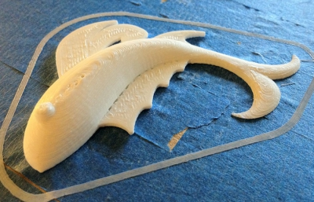
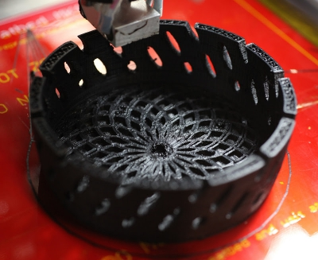

Here we are. After two months since I started to write this software from scratch, there are many people enjoying using it. And I’m enjoying to receive their feedback!
Tech Paladin published a post entitled Slic3r 0wns with some pictures:

Joachim Glauche, owner of RepRapSource.com and creator of the ShaperCube published some pictures of nice high-resolution prints sliced thanks to the speed and accuracy of Slic3r.

Some people printed the same object with Slic3r and Skeinforge and published pictures with the comparison: see this picture by Blue_Metal, this one by John Ridley. Also, see this picture by Richard Goodwin.